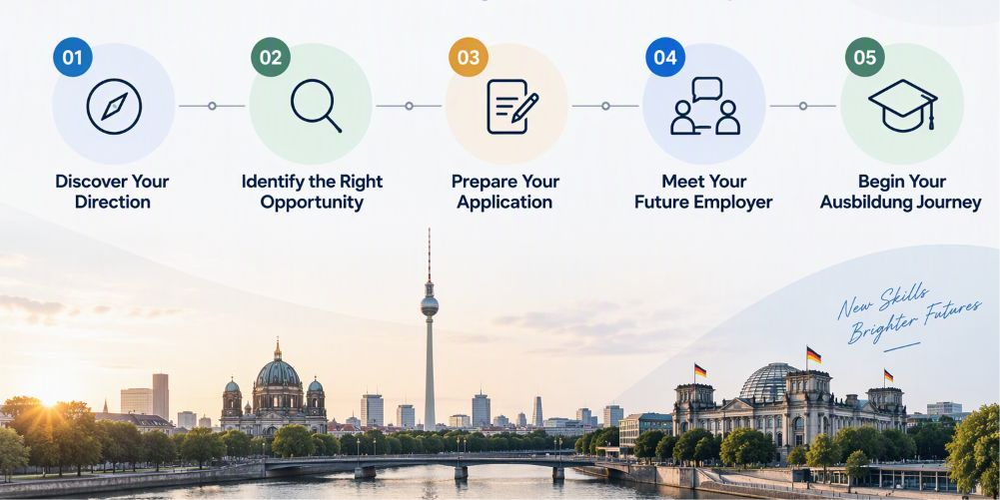

For candidates · Vocational training
At WinG Group, we connect motivated international candidates with suitable Ausbildung opportunities in Germany and provide professional guidance throughout the process — from identifying the right career path to preparing for applications and interviews.
At WinG, we look beyond your application. We take the time to understand your education, interests, strengths, language skills and career ambitions — and help you identify Ausbildung opportunities that fit your profile.
Germany offers Ausbildung opportunities across a wide range of professional fields.

Tell us about your education, interests, language skills and career goals.